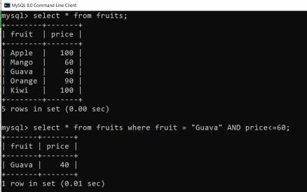
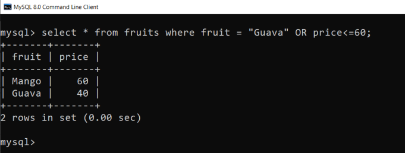
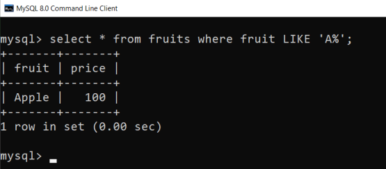
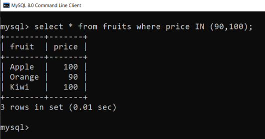
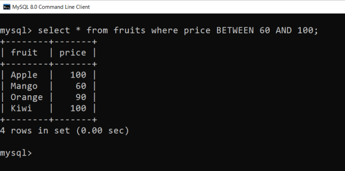

MySQL Conditions
AND Condition
The MySQL AND condition is used with SELECT, INSERT, UPDATE or DELETE statements to test two or more conditions in an individual query. For example :
OR Condition
The MySQL OR condition specifies that if you take two or more conditions then one of the conditions must be fulfilled to get the records as result.
LIKE condition is used to perform pattern matching to find the correct result. It is used in SELECT, INSERT, UPDATE and DELETE statement with the combination of WHERE clause.
Syntax :
expression LIKE pattern [ ESCAPE 'escape_character' ]

IN Condition
The MySQL IN condition is used to reduce the use of multiple OR conditions in a SELECT, INSERT, UPDATE and DELETE statement.
IS NULL Condition
MySQL IS NULL condition is used to check if there is a NULL value in the expression. It is used with SELECT, INSERT, UPDATE and DELETE statement.
Syntax:
SELECT * FROM table_name WHERE column_name IS NULL;
IS NOT NULL Condition
MySQL IS NOT NULL condition is used to check the NOT NULL value in the expression. It is used with SELECT, INSERT, UPDATE and DELETE statements.
Syntax:
SELECT * FROM table_name WHERE column_name IS NOT NULL;
BETWEEN Condition
The MYSQL BETWEEN condition specifies how to retrieve values from an expression within a specific range. It is used with SELECT, INSERT, UPDATE and DELETE statement.
